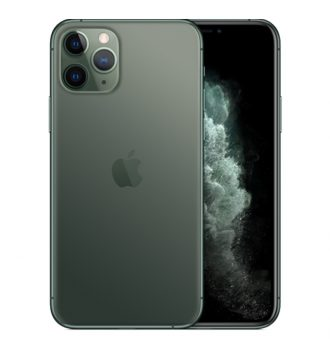

Empresa tus soluciones

Con una pantalla OLED Super Retina XDR, el iPhone 11 Pro está potenciado por un procesador A13 Bionic de Apple, con opciones de almacenamiento de 64GB, 256GB o 512GB. La cámara posterior del iPhpne 11 Pro es triple, de 12 MP + 12 MP + 12 MP, mientras que su cámara frontal también es de 12 MP.
El sistema operativo del LG Q6 es Android 7.1.1. El LG Q6 trabaja con un cpu Snapdragon 435 de 1 núcleos que alcanza una velocidad de reloj de 1,4 GHz. Más características técnicas: en el apartado de memoria, contamos con 3 GB de memoria RAM y 32 GB para almacenamiento de archivos, apps y datos.
¡Un 2019 realmente Smart!
Iniciamos el año con el Huawei P Smart 2019, un celular que utiliza la Inteligencia Artificial para identificar y mejorar tu vida. Siente cómo la IA se adecúa a las dos cámaras traseras de 13 y 2 MPX para ofrecerte las mejores fotografías. Además, disfruta cómo actúa a la hora de tomarte selfies con la cámara frontal de 8 MPX. De la misma manera, la seguridad y el diseño van de la mano en este Smartphone que incluye desbloqueo por huella y reconocimiento facial a su cuerpo curvado 3D.
Nosotros